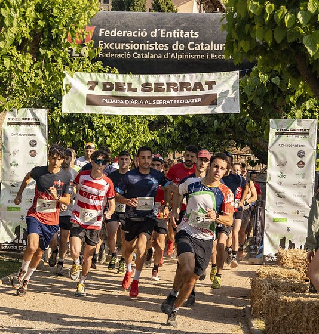

La Cursa del Serrat
La Cursa del Serrat és una prova de trail running que recorre alguns dels camins i corriols més espectaculars de l’entorn del Serrat Llobater. Una cursa pensada per gaudir de la muntanya, de l’esport i del bon ambient que es crea al voltant del trail, sense perdre mai el caràcter popular que ens fa especials.
La prova ofereix dues distàncies perquè tothom hi pugui participar segons el seu nivell i les seves ganes de guerra:
- Trail 12 km – un recorregut complet, amb desnivell, corriols divertits i algun tram tècnic que farà treballar les cames.
- Trail 5 km – una distància més curta però igualment intensa, perfecta per iniciar-se al trail o per sortir a córrer fort.
Més enllà de la competició, la Cursa del Serrat vol ser també una festa per al poble. Una jornada per garantir bon ambient entre corredors, voluntaris i públic, i per omplir els camins del Serrat de gent amb ganes de passar-ho bé.
Després de la cursa, corredors i acompanyants podran allargar la festa amb el dinar popular, amb menjar, beguda i postres per 15 €.
Les inscripcions inclouen assegurança per als corredors federats, i en cas de no disposar-ne es podrà contractar una assegurança puntual per 2 €.
Els participants inscrits abans del 6 de maig tindran assegurada la samarreta oficial de la cursa. A partir d’aquesta data les inscripcions seguiran obertes, però sense garantia de samarreta, tot i que es podrà encarregar el mateix dia de la cursa si encara n’hi ha disponibles.
La Cursa del Serrat és molt més que una cursa: és muntanya, esforç, comunitat i territori… però sobretot és poble.
Mapa Interactiu
Descobreix la ruta, els punts de control i els serveis disponibles.
Informació d'Interès
Recorreguts
Distàncies de 5km i 13km.
Horaris
Recollida de dorsals des de les 07:00h del matí el mateix dia.
Sortida de les dues modalitats a les 9:00h del matí.
Avituallaments
Curta: 1 Liquid i 1 solid .
Llarga: 1 Liquid i 2 solids .
Aparcament
Zones habilitades gratuïtes al poble.
Material obligatori
Mòbil i 500ml d'aigua
Obsequi
Samarreta conmemorativa.
Preguntes freqüents
On puc quedarme a dinar despres de la cursa?
No problem, l'organització ha pensat amb tu i farà un bon dinar.
Hi ha servei de dutxes?
Sí, a la piscina municipal situada a 550m de l'arribada.
Classificacions
Consulta els resultats i cerca participants.
Resultats
| Pos. | Dorsal | Nom | Arribada | Temps | Ritme |
|---|
Detall del participant
Galeria de Fotos 2025
Reviu els millors moments de la cursa.